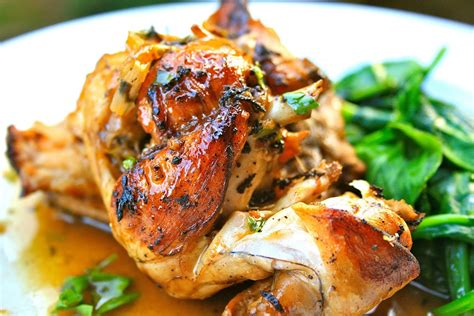

Conejo al ajillo
Una de las formas más tradicionales de preparar el conejo es esta, con abundantes ajos.

Ingredientes:
- 1 conejo
- 1 cabeza ajos
- 1 vaso vino blanco
- aceite
- sal
Elaboración:
Primero partimos el conejo en trozos pequeños y ponemos a freírlos en una sartén con abundante aceite, a fuego lento. Le añadimos el vino y esperamos a que se dore.